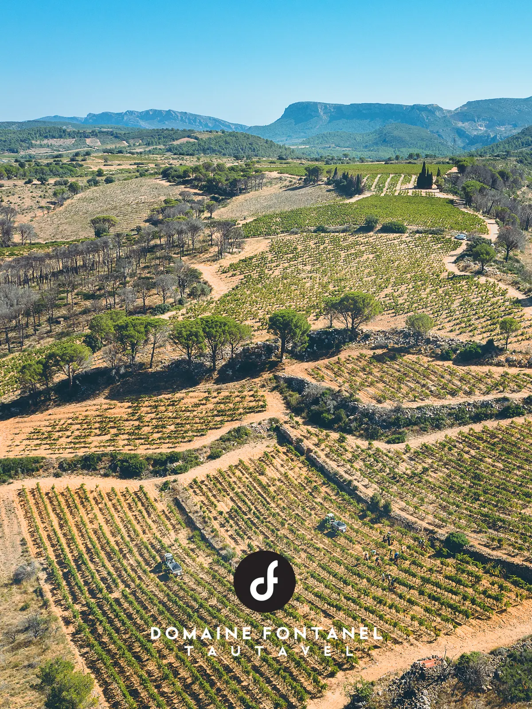
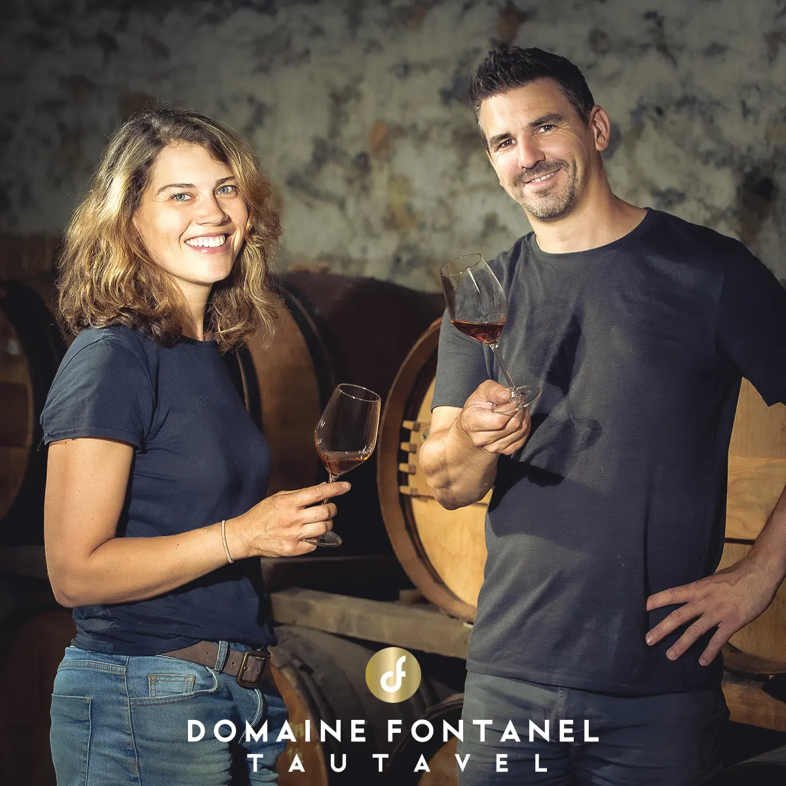
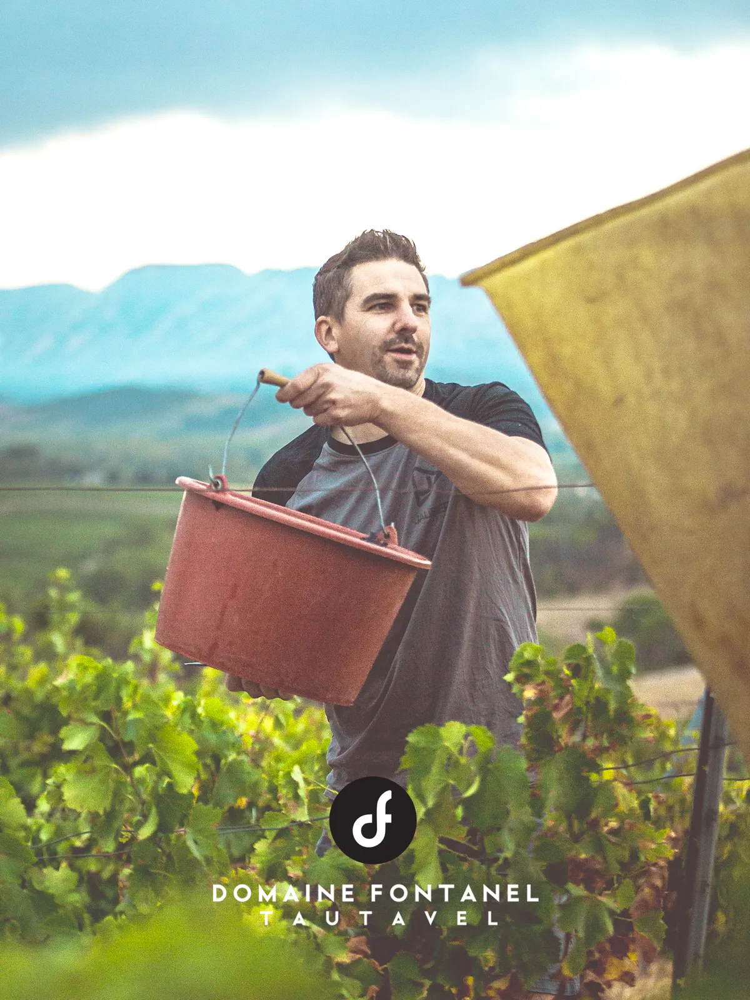
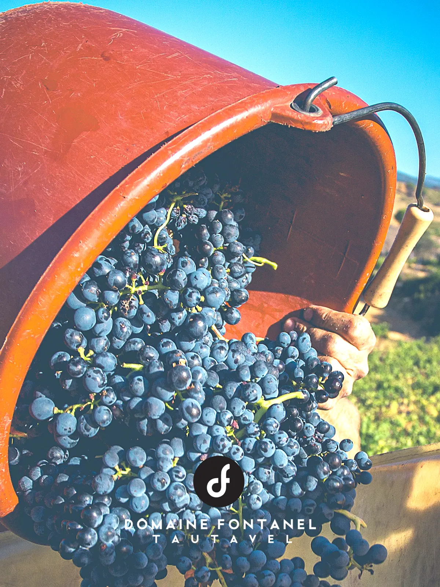
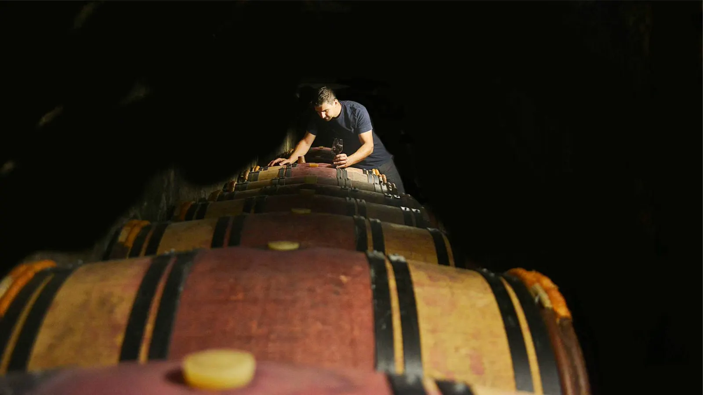
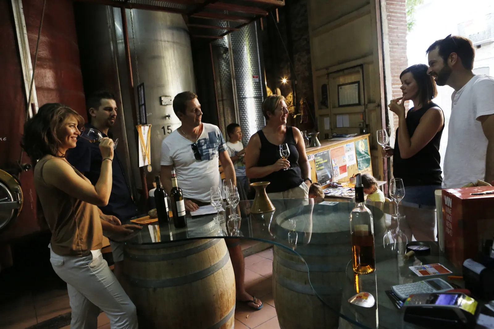
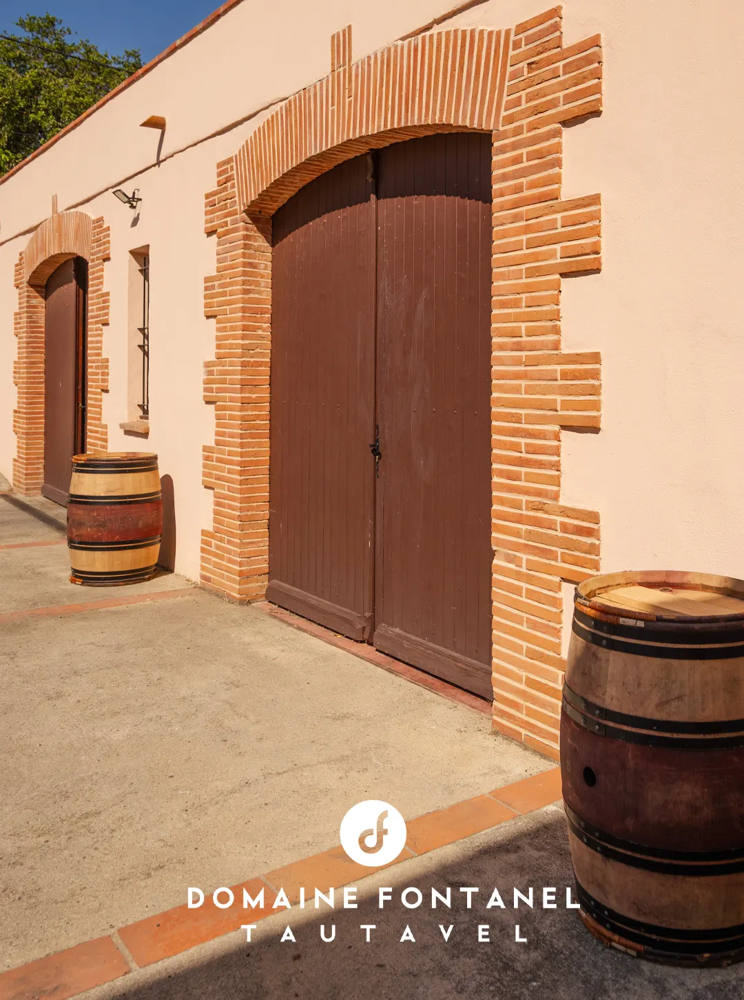
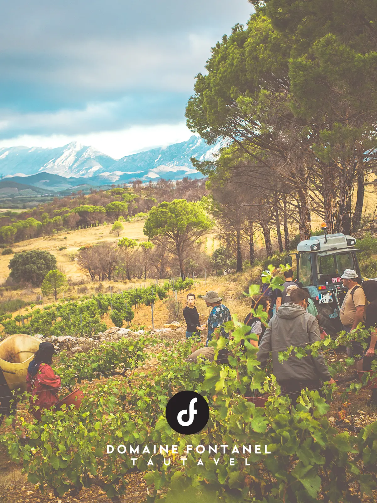

Nos vins de Tautavel, au pied des Corbières.

Sur les contreforts des Corbières, entre Méditerranée et Pyrénées, le domaine s’étend sur 30 hectares, dont 20 en vignes. Des rendements très faibles, des vins vinifiés de façon traditionnelle.
- 30 hadont 20 en vignes
- < 30 hl/hades rendements souvent sous ce seuil
- 1989des vins reconnus depuis, en France et à l’étranger
- HVE 3depuis notre millésime 2018
- Gîtes 4*le gîte Alzina et le lodge Escala


Depuis 1864, six générations de vignerons.
Six générations se sont attachées à perpétuer la vocation agricole de cette région du Roussillon et à tirer le meilleur parti d’un terroir prédestiné. En 1989, Pierre et Marie-Claude Fontaneil ont créé le Domaine Fontanel, fruit du rapprochement de leurs deux familles.
Fin 2016, Elodie et Matthieu Collet ont pris leur suite. Vous continuerez à trouver les cuvées qui font l’identité du domaine.
À Tautavel, la richesse des terroirs est peu commune. Une diversité qui offre des possibilités de créer des assemblages et cuvées d’exception.
Nous travaillons les terroirs qui bordent l’Agly et ses affluents, à Tautavel, Vingrau et Maury.
Découvrir nos activités en photos
À la cave, notre travail est assez simple.
Simple parce que nous rentrons des raisins d’excellente qualité, sains et à maturité optimale.
- HVE niveau 3
Certifié Haute Valeur Environnementale au niveau le plus élevé depuis notre millésime 2018. Nous suivons principalement le cahier des charges bio, avec des interceps pour désherber sans chimie.
- Moins de 30 hl/ha
Traitements raisonnés, labours : les rendements sont très faibles, souvent moins de 30 hectolitres par hectare.
- 18 mois en cave
Après des vinifications traditionnelles, nos rouges passent par des élevages longs : en moyenne 18 mois en cave, puis 6 à 12 mois en bouteille avant la vente.
- Depuis 2025
Nos vendanges sont accueillies dans notre nouveau chai, à Montner, équipé de cuves inox et d’un pressoir à membrane.

Des vins reconnus depuis 1989.
Depuis 1989, nos vins sont reconnus dans des revues spécialisées en France, à l’étranger et dans de nombreux concours nationaux.


Venez goûter dans la rue principale de Tautavel.
Notre cave historique est devenue notre caveau d’accueil et de dégustation. Nous vous présentons nos vins en toute simplicité, avec des explications plus techniques si vous le voulez aussi. Sentez-vous à l’aise, posez toutes vos questions.
Au caveau
25 avenue Jean Jaurès, d’avril à octobre du lundi au samedi de 15 h à 18 h, sur rendez-vous le reste de l’année.
Au chai de Montner
Notre nouveau lieu de production se visite sur réservation préalable.
Dans les vignes
Accompagnez-nous dans nos terroirs. Prévoyez de bonnes chaussures, nos terroirs se méritent !
Séjourner dans nos gîtes 4*.
Une nature intacte et le charme de notre vallée, entre mer et montagne. Les hébergements et la piscine donnent sur le Cirque de Vingrau, la vallée du Verdouble et les Pyrénées. Pendant votre séjour, nous pouvons organiser des dégustations vins et tapas et des randonnées dans les vignes.
